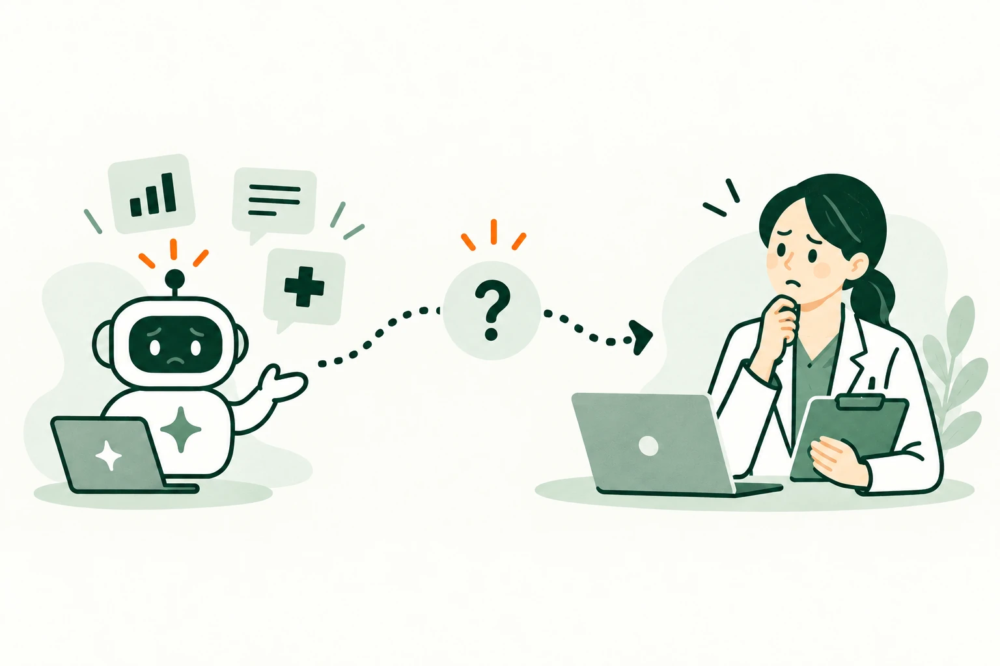
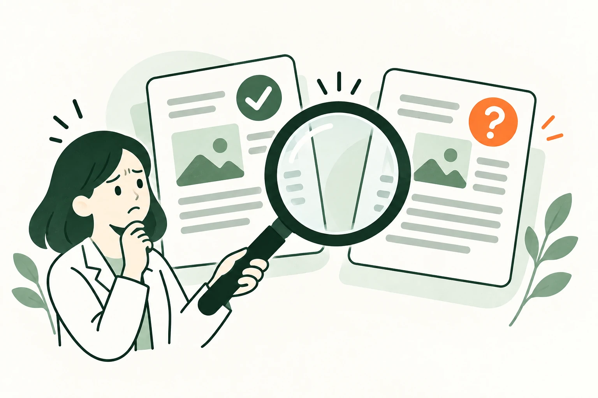
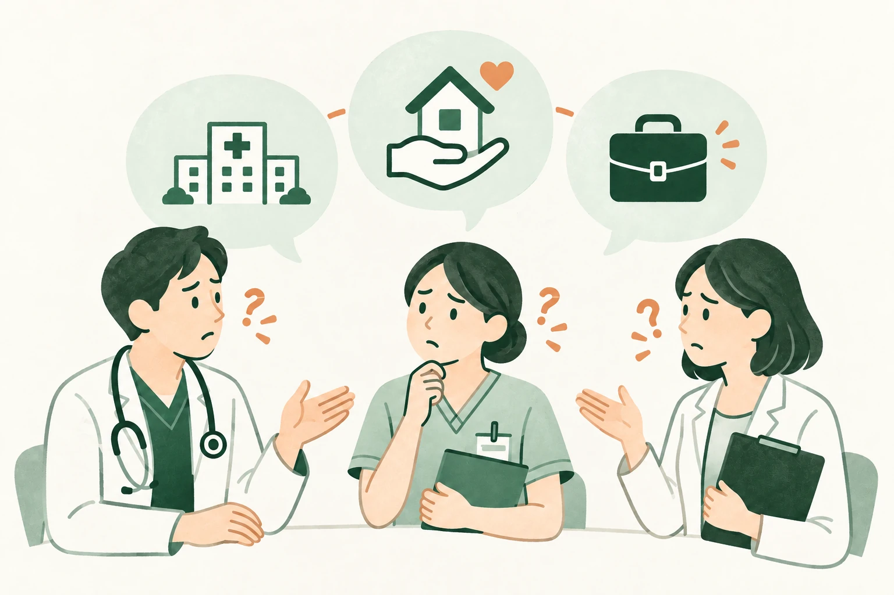
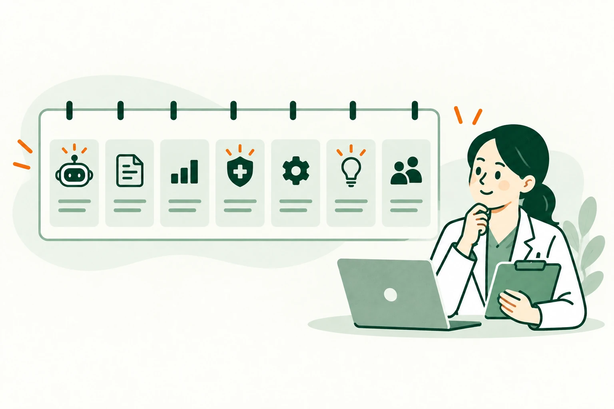
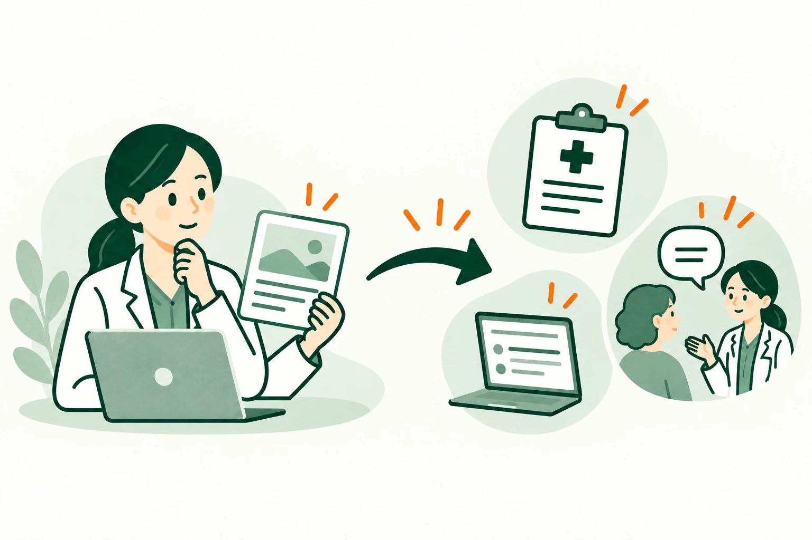
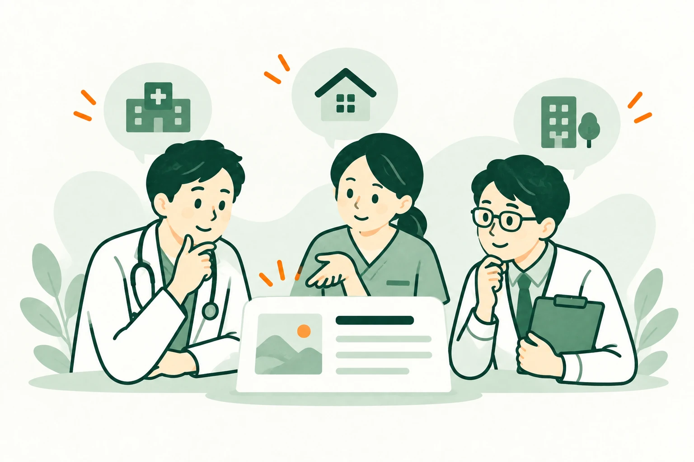
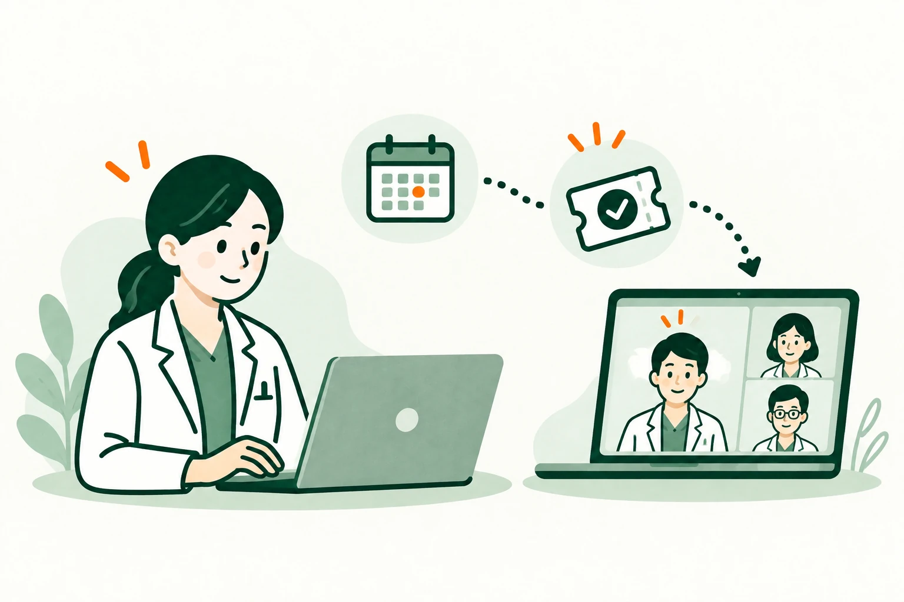
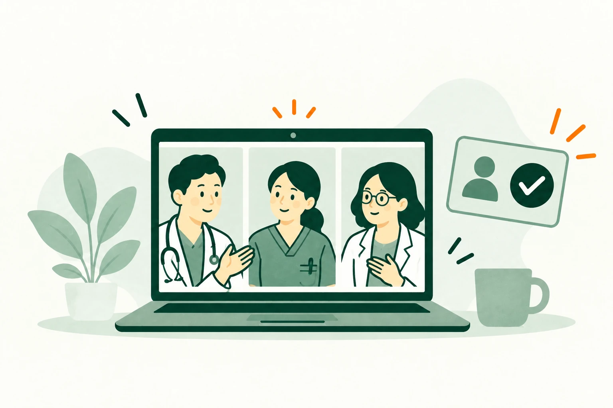

進歩が速くて、追いきれない
毎日のように新しい情報が出てくる。忙しい日々の中で、今週何が変わったのか把握できていない。
週末の朝30分、仕事に活かす学び。
1週間のAIニュースを整理し、来週の仕事に活かすヒントを見つける30分。医療・介護・産業保健のセラピストと一緒に学びます。
AIのニュースを、自分の仕事に結びつけるのが難しい。
そんな日々の迷いを、週末に一緒に整理します。
毎日のように新しい情報が出てくる。忙しい日々の中で、今週何が変わったのか把握できていない。

便利そうな機能は知っていても、自分の業務のどの場面で役立つのか、具体的な使い道が見えない。

SNSの話題やニュースを見ても、公式の発表なのか、誰かの予測や感想なのか、判断しにくい。

同じセラピストでも、働く場所や専門領域はさまざま。他の人の解釈や、自分にはない視点に触れる機会が少ない。
左右にスワイプ、または矢印で切り替えられます。
ひとりでは追いきれない情報を、一緒に整理する。
週末の30分で、ニュースと自分の仕事の接点を見つけていきます。
今週の変化を知り、来週の仕事を考える。毎週30分で、3つの視点を持ち帰ります。

01｜全体像をつかむ1週間のAIニュースから、新しい機能や動きの全体像をつかみます。
今週の変化を、自分の言葉で整理する。

02｜仕事に結びつける記録の整理、説明資料づくりなど。ニュースを身近な業務に置き換えます。
来週の仕事で試すヒントを見つける。

03｜視点を広げる臨床・介護・産業保健など、異なる専門領域のセラピストの解釈に触れます。
自分にはなかった視点を持ち帰る。
LISTEN AGAIN
過去回の音声をstand.fmで聴けます。朝活に参加できなかった週の振り返りにもご利用ください。
← 横にスワイプすると、他の回もご覧いただけます →
VOICES
参加後アンケートから、寄せられた声をご紹介します。集計の対象期間と条件は下記をご確認ください。
2026年6月6日〜10月3日の参加後アンケート（延べ162回答）より。運営メンバーの回答を含みます。

2026年10月まで
2026年10月までは、セラピストドットコムからもご参加いただけます。開催ページからお申し込みのうえ、届いた参加案内をご確認ください。
10月の開催・申込を見る
2026年11月以降
コメキャリ生、たより｜TAYORI・いろは｜IROHAの会員が対象です。対象サービス会員への参加案内からご確認いただき、ご参加ください。
10月までは、セラピストドットコムから無料でご参加いただけます。11月以降はコメキャリ生、TAYORI・IROHA会員向けの企画になります。対象の方は、追加料金なしでご参加いただけます。
土曜の朝に整える習慣をつくることで、金曜日の夜の過ごし方から見直すきっかけにしてほしいと考えています。週末のはじめに学び、自分の仕事や暮らしを整える時間を設けることで、その後の週末をより有意義に過ごし、時間を大切に使えるようになることを目指しています。
医療・介護の専門性を持ち、産業保健を学んできたセラピストが集まるToToNoE+です。運営メンバーと理念を見る
毎週土曜 朝6:00〜｜30分。自分に合った入口から、次回の朝活にご参加ください。
毎週のニュースから、学びを続ける入口へ。
いろはの案内は公開中です。一般提供は準備中です。